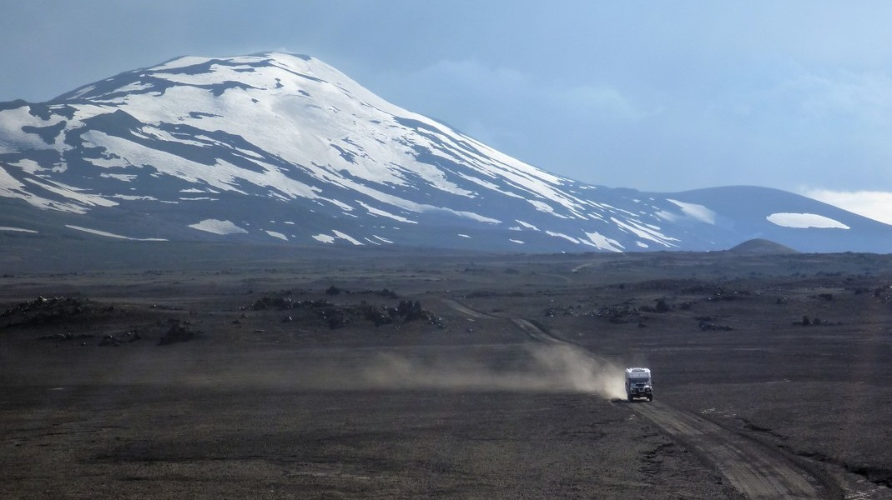
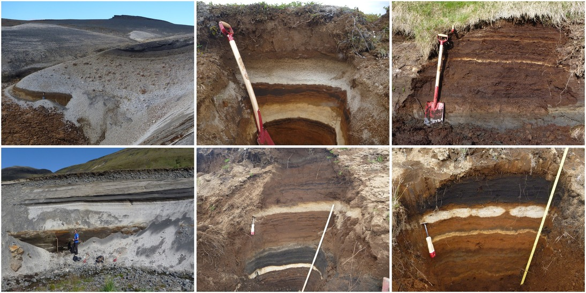
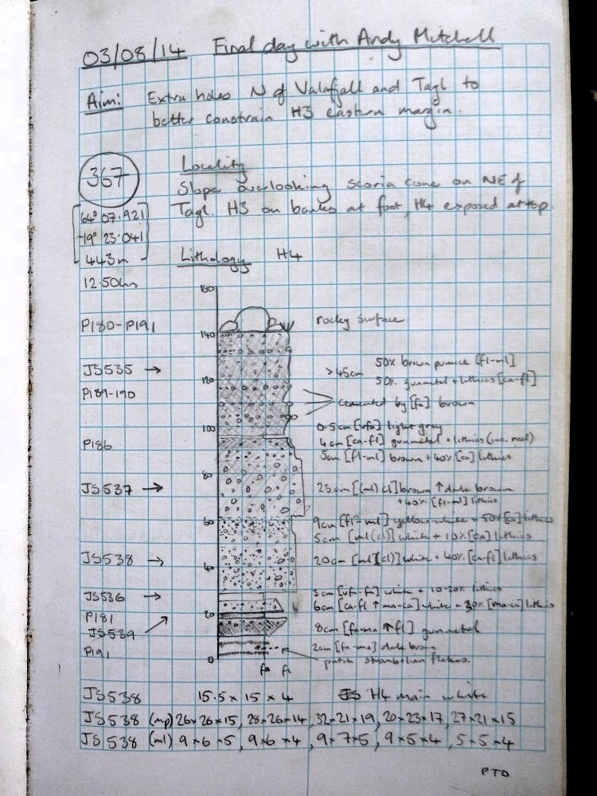
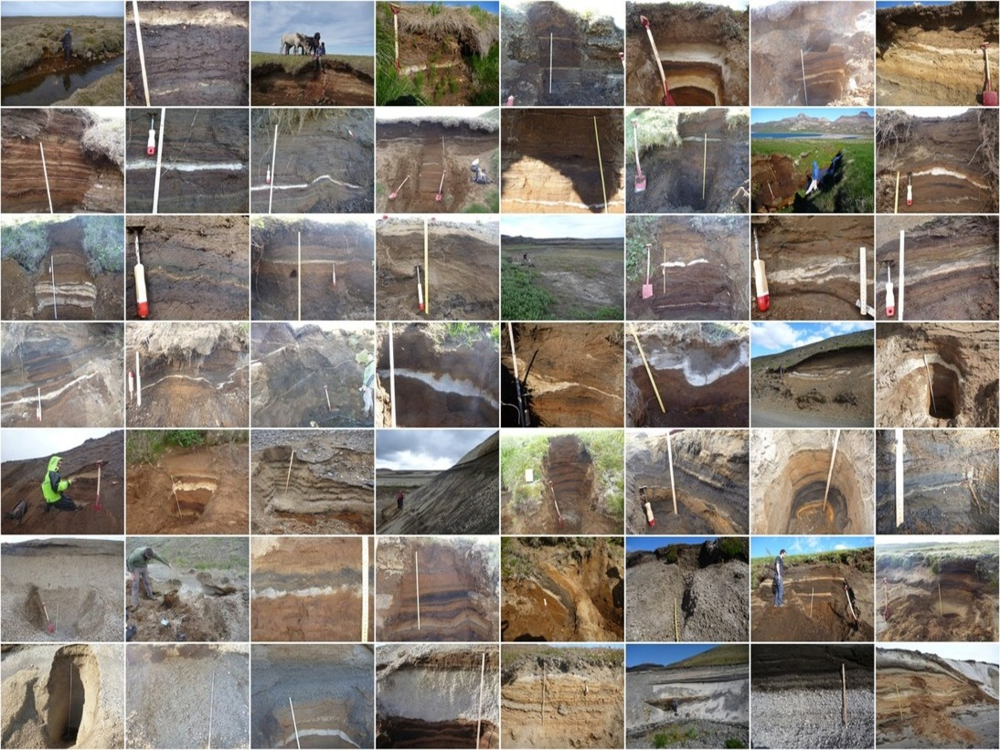
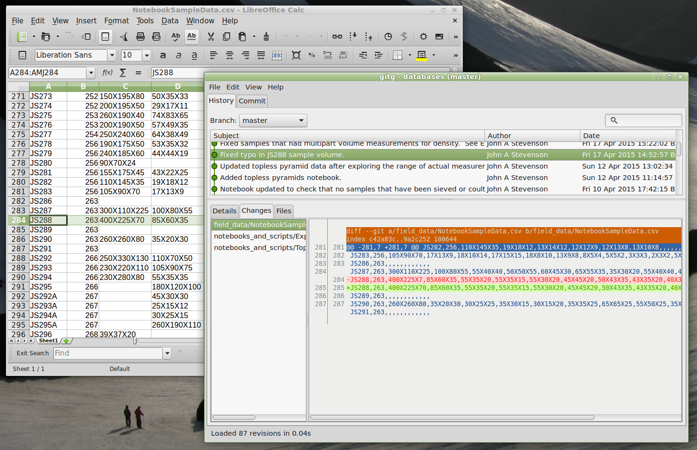
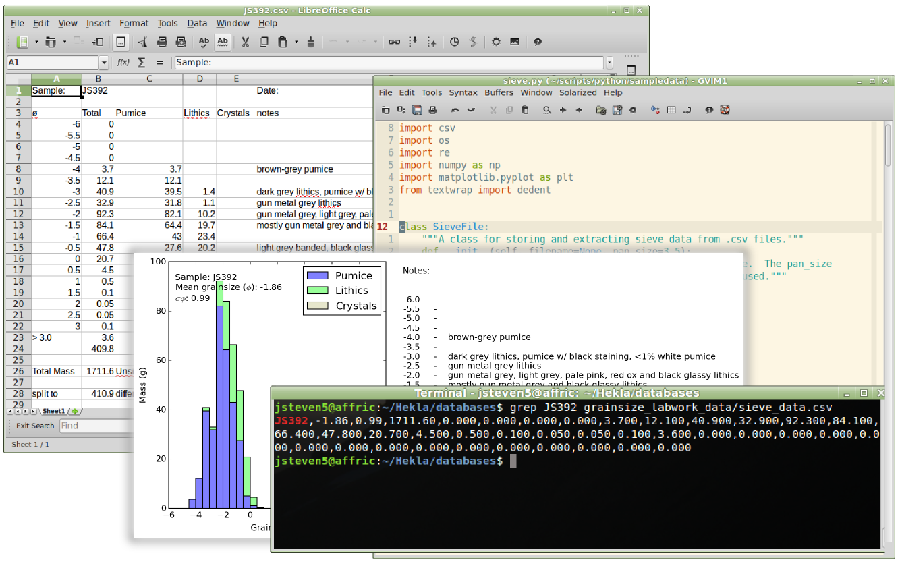
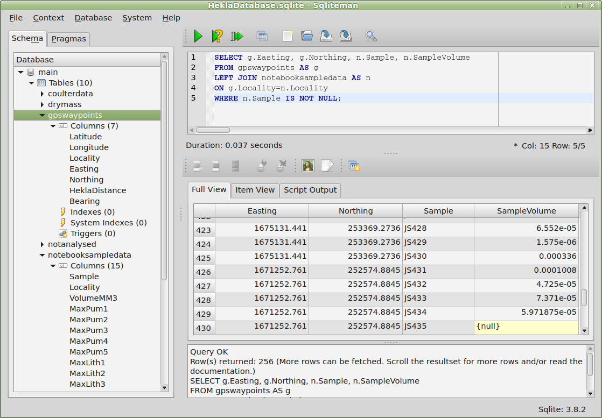
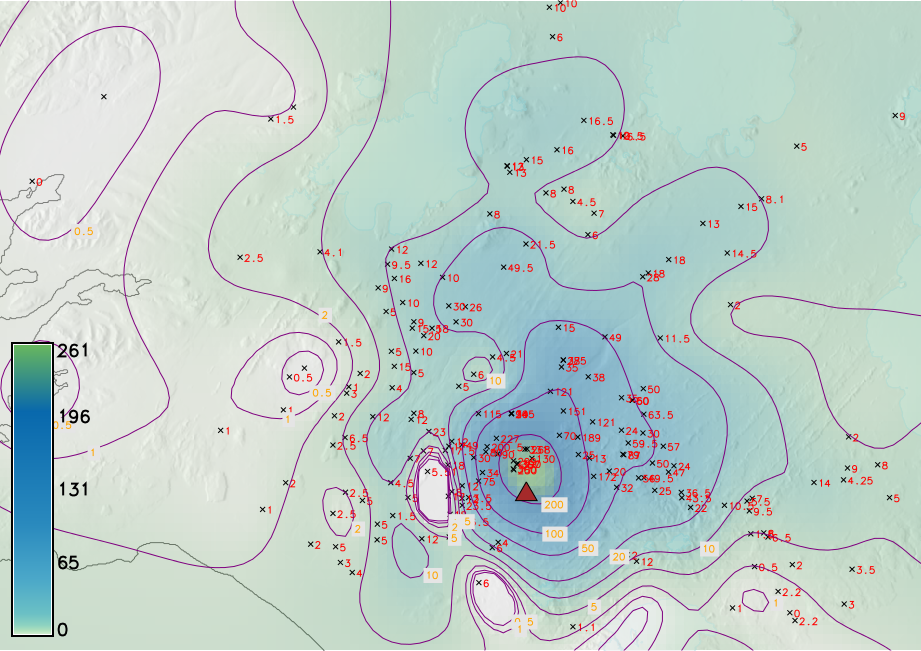
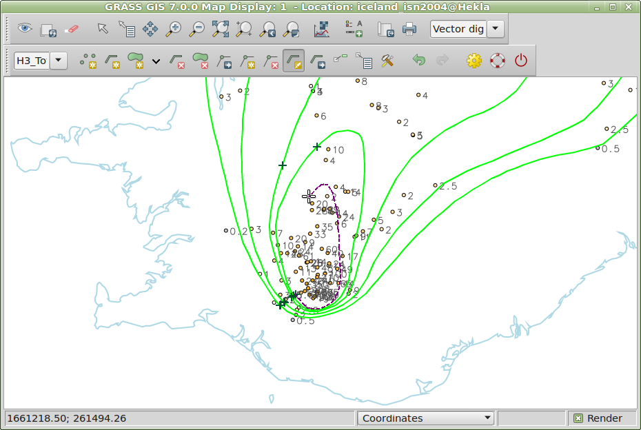
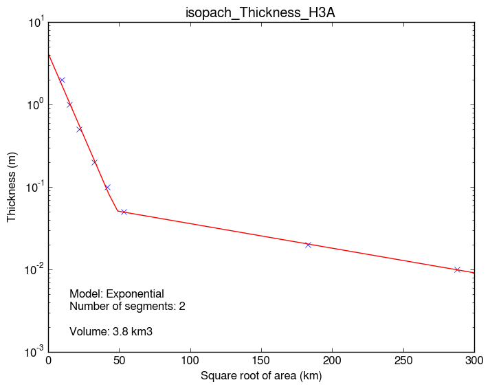

Find deposits

Measure thickness and more...

...in many sites

Store field and lab data in version-controlled text files

Calculate statistics and plot graphs

Read into Spatialite

Read into GIS tools via GDAL/OGR
Map via QGIS2Web - View Larger Map
Map via QGIS2Web - View Larger Map
Use GRASS to interpolate between data points

Digitise _'isopachs'_ by hand

Map via QGIS2Web - View Larger Map
Calculate volume with AshCalc

H3A volume: 3.8 km3
// End presentation ---------------------------------------------------